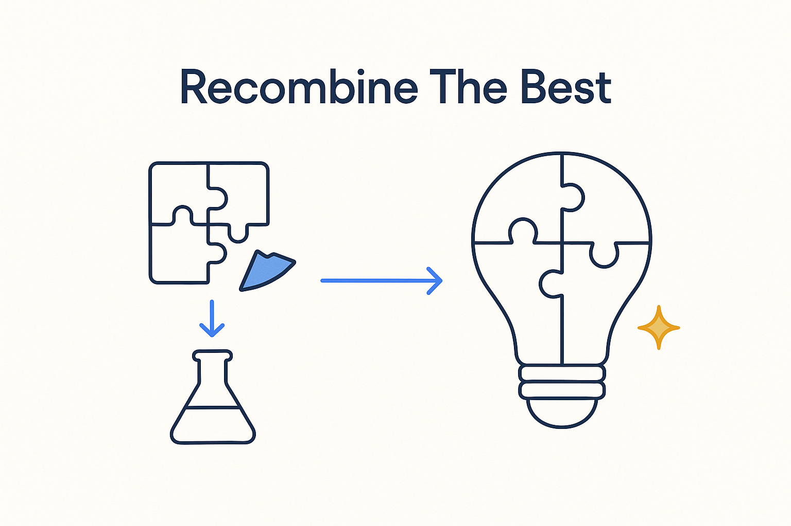

After you decompose and distil, put the essentials back together in a new way — originality is in the recombination, not in starting from nothing.

> After you decompose and distil, put the essentials back together in a new way — originality is in the recombination, not in starting from nothing.
Recombine is the move that closes the loop. You find the essence, you decompose the whole into clean parts, you distil what works from the giants — and then you put it back together in a new way. The value isn’t in any single borrowed piece; it’s in the combination no one had assembled before. Data Vault’s key discipline, Kimball’s grain, FCO-IM’s verbalization, AI-readable metadata — each is an old wheel; recombining them onto one vehicle is the new thing.
This is where originality actually lives. Not in pretending the past didn’t happen and inventing from scratch, but in synthesis: taking well-understood parts and composing them into something that behaves differently as a whole. Breakthrough Modeling is exactly this — structure, movement and meaning were all modeled before, separately; uniting them in one AI-readable model is the recombination that makes it a breakthrough.
Recombine is the counterpart to decomposition: break down to understand, combine back to create. A pile of good parts is not a system; the system is in how they are put together.
Where it lives: the signature principle of Breakthrough Modeling — the synthesis that turns old parts into a new whole.